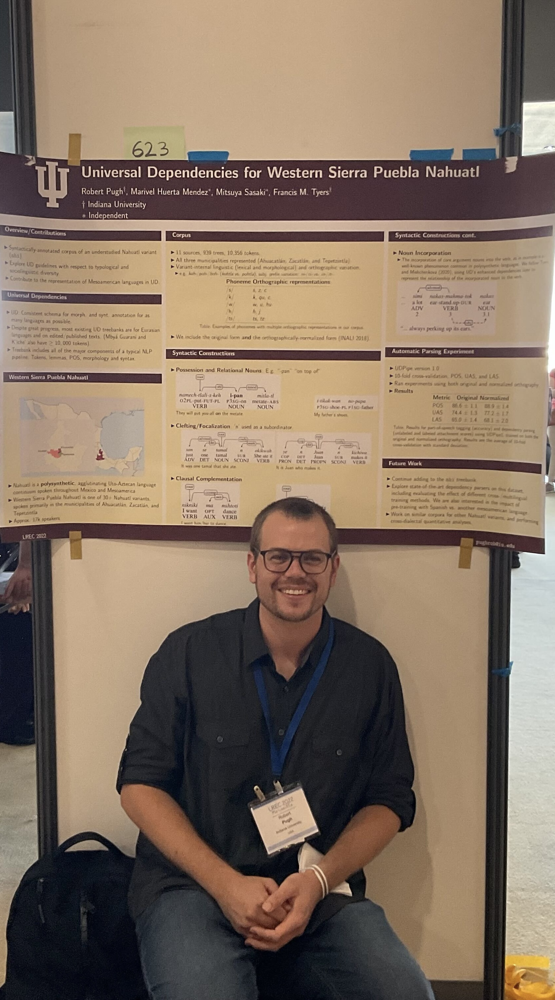

|  |
Robert PUGH
PhD student,
|
APPLICATIONS for PhD and Master programs in our center are welcome. We have competitive government scholarship (also for foreign students) sufficient for living in Mexico. Send me email for details.
Text processing techniques and systems, automatic dictionary processing, automatic morphological analysis of different languages, automatic syntactic analysis, anaphora resolution, word sense disambiguation, corpus linguistics, parallel texts, linguistic software development, deep learning.
Current projects: linguistic tools, parallel texts, automatic analysis of explanatory dictionaries, sentiment and emotion analysis, authorship attribution, syntactic n-grams, applications of word emeddings, applications of soft cosine.
New IDEAS:
(1) Soft similarity and soft cosine measure. We propose to consider similarity of pairs of features for calculation of similarity of objects in Vector Space Model (VSM). It means that we add into the VSM each pair of features as the new feature weighted with their similarity. This allows to generalize the well-known cosine similarity measure in Vector Space Model: we introduce two equations that correspond to ''soft cosine measure''. Note that when the features are similar only to themselves, i.e., the matrix of similarity has 1s only at the diagonal, then these equations obtain the same result as the standart cosine measure. We use Levenshtein distance for calculation of the similarity between features, measured in characters or in elements of n-grams. Well-known WordNet similarity can be used as well.The same idea can be applied to similarity in VSM while applying machine learning algorithms: the similarity is tranformed into ''soft similarity''. We simply add new features that are similarity-weighted pairs of the original features and then consider the new feature space (Grigori Sidorov, Alexander Gelbukh, Helena Gómez-Adorno, and David Pinto. Soft Similarity and Soft Cosine Measure: Similarity of Features in Vector Space Model. Computación y Sistemas, Vol. 18, No. 3, 2014, pp. 491–504, DOI: 10.13053/CyS-18-3-2043).
(2) Syntactic n-grams = n-grams constructed by following paths in syntactic trees = using syntax in machine learning (see publications below). Syntactic n-grams can be non-continuous, when bifurcations in paths are permitted, or continuous, when no bifurcations are considered. Special metalanguage is needed: take words (nodes) in bifurcations into brackets and separate them with comas; apply recursively. You can download the corresponding Python script below and consult the publications.
(3) Tree Edit Distance for computing soft similarity of syntactic n-grams (Grigori Sidorov, Helena Gómez-Adorno, Ilia Markov, David Pinto, Nahun Loya. Computing Text Similarity using Tree Edit Distance. Annual Conference of the North American Fuzzy Information Processing Society (NAFIPS) held jointly with 2015 5th World Conference on Soft Computing (WConSC), pp. 1-4, 2015).
(4) Word embeddings/Distributed document representation in authorship attribution and author profiling. (1) Juan-Pablo Posadas-Durán, Helena Gómez-Adorno, Grigori Sidorov, Ildar Batyrshin, David Pinto, Liliana Chanona-Hernández. Application of the distributed document representation in the authorship attribution task for small corpora. Soft computing, Volume 21, Issue 3, pp 627–639, doi: 10.1007/s00500-016-2446-x, 2017, also available directly from Springer, (2) Helena Gómez-Adorno, Ilia Markov, Grigori Sidorov, Juan-Pablo Posadas-Durán, Miguel A. Sanchez-Perez, Liliana Chanona-Hernandez. Improving Feature Representation Based on a Neural Network for Author Profiling in Social Media Texts. Computational Intelligence and Neuroscience, vol. 2016, 13 pages, 2016, doi:10.1155/2016/1638936, (3) Ilia Markov, Helena Gómez-Adorno, Juan-Pablo Posadas-Durán, Grigori Sidorov, Alexander Gelbukh. Author Profiling with Doc2vec Neural Network-Based Document Embeddings. LNAI, vol. 10062 (MICAI 2016), pp. 117–131, 2017.
(5) TF-IDF for weighting of word embeddings (Ignacio Arroyo-Fernández, Carlos-Francisco Méndez-Cruz, Gerardo Sierra, Juan-Manuel Torres-Moreno, Grigori Sidorov. Unsupervised Sentence Representations as Word Information Series: Revisiting TF--IDF. arXiv:1710.06524, 2017)
(6) Syllables as classification features in AA task (G. Sidorov. Automatic Authorship Attribution Using Syllables as Classification Features. Rhema journal, Vol. 1, 2018, pp. 62-81).
(7) N-grams instead of words in embeddings (n-gram embeddings) for deep learning (Helena Gómez-Adorno, Juan-Pablo Posadas-Durán, Grigori Sidorov, David Pinto. Document Embeddings Learned on Various Types of n-grams for Cross-Topic Authorship Attribution. Computing, 2018).
Our Winning Systems in Shared Tasks:
2014: We won the task of the Text Alignment at PAN 2014. Miguel Sanchez-Perez, Grigori Sidorov, Alexander Gelbukh. The Winning Approach to Text Alignment for Text Reuse Detection at PAN 2014. In: L. Cappellato, N. Ferro, M. Halvey, W. Kraaij (eds.). Notebook for PAN at CLEF 2014. CLEF 2014. CLEF2014 Working Notes. Sheffield, UK, September 15-18, 2014. CEUR Workshop Proceedings, ISSN 1613-0073, Vol. 1180, CEUR-WS.org, 2014, pp. 1004–1011.
2017: We shared the 1st rank (out of 17 teams) in the Native Language Identification (NLI) Shared Task 2017. I. Markov, L. Chen, C. Strapparava, G. Sidorov. CIC-FBK Approach to Native Language Identification. In: Proceedings of the 12th Workshop on Innovative Use of NLP for Building Educational Applications (BEA12 2017), Copenhagen, Denmark. ACL, pp. 374–381, 2017.
2017: Our systems occupied the first four places (out of 22 systems) at the RUSProfiling PAN at FIRE Track on Cross-genre Gender Identification in Russian. I. Markov, H. Gómez-Adorno, G. Sidorov, A. Gelbukh. The Winning Approach to Cross-Genre Gender Identification in Russian at RUSProfiling 2017. In: Notebook Papers of FIRE 2017, FIRE-2017, Bangalore, India, December 8-10, CEUR Workshop Proceedings. CEUR-WS.org, 2017.
2017: We won the task of the Author Clustering at PAN 2017. Helena Gómez-Adorno, Yuridiana Aleman, Darnes Vilariño, Miguel A. Sanchez-Perez, David Pinto, Grigori Sidorov. Author Clustering using Hierarchical Clustering Analysis. Notebook for PAN at CLEF 2017.
New RESOURCES:
New book: G. Sidorov. Non-linear construction of n-grams in computational linguistics: syntactic, filtered, and generalized n-grams. 2013, 166 p. (this is translation draft, you can also download the Spanish original: Construcción no lineal de n-gramas en la lingüística computacional: n-gramas sintácticos, filtrados y generalizados). Extended version of this book is published by Springer in 2019, Syntactic n-grams in computational linguistics. In Part I we describe vector space model in detail, cosine similarity, tf-idf, and LSA. We also describe the general scheme of an experiment in the modern computational linguistics: problem—corpus—gold standard—feature selection—dimensionality reduction—classification—evaluation (k-fold cross validation). In Part II we consider features that can be used in the vector space model, but that are obtained in a non-linear manner. We describe syntactic n-grams, which are constructed by following paths in syntactic trees (continuous and non-continuous), filtered n-grams, which are constructed after filtering of words, and generalized n-grams, when we substitute words with other concepts using a synonym dictionary or an ontology.
Spanish News Corpus (tagged with gender, author, Spanish variety). [Corpus de noticias en español marcado con género, autor, variedad de español (país).] Multi-tagged corpus for author attribution, author profiling, and discriminating between similar languages in Spanish. The corpus contains 5,187 news articles tagged with gender, author, and Spanish variety (Argentina, Venezuela, Colombia, Guatemala, Spain, Mexico, Panama, Chile). We include two versions: with Named Entities and without NE. Download. If you use it, please cite: M. Sanchez-Perez, I. Markov, H. Gómez-Adorno, G. Sidorov. Comparison of Character N-grams and Lexical Features on Author, Gender, and Language Variety Identification on the Same Spanish News Corpus. In: Experimental IR Meets Multilinguality, Multimodality, and Interaction. 8th International Conference of the CLEF Association (CLEF 2017), Dublin, Ireland. LNCS, Springer, vol. 10456, 2017. Download author version.
Spanish Specific Lexicon of Social Networks, 271 words (46 emoticons)
with short definitions [Léxico específico de redes sociales en español].
Download. If you use it, please cite:
Fenix Osuna Sánchez, Karen Josette Minjares Ávila, Grigori
Sidorov. Compilation of Spanish Specific Lexicon of Social Networks,
2017.
For example:
... Baka: Tonto
Banamex: Véase Banear
Banear: Bloquear o eliminar a una persona
Bangarang: Véase Banear ...
Corpus of program code for text processing like tasks: (1) Corpus for thematic classification/author detection for program code (for Karel programming language), 100 tasks, about 100 solutions for each. Download. (2) Corpus with 350 codes classified for 11 tasks and for different ideas of solution (for Karel programming language). Download. If you use these corpora please cite: (1) Grigori Sidorov, Martín Ibarra Romero, Ilia Markov, Rafael Guzman Cabrera, Liliana Chanona-Hernández, Francisco Velásquez. Automatic Detection of Similarity of Programs in Karel Programming Language based on Natural Language Processing Techniques. Computación y systemas, Vol. 20, No. 2, 2016, pp. 279–288 (in Spanish). (2) Grigori Sidorov, Martín Ibarra Romero, Ilia Markov, Rafael Guzman Cabrera, Liliana Chanona-Hernández, Francisco Velásquez. Measuring Similarity between Karel Programs Using Character and Word N-grams. Programming and Computer Software, Vol. 43(1), pp. 47-50, 2017 (authors' version).
Multilingual Lexicon for PreProcessing of Social Media/Social networks/Twitter Texts for English, Spanish, Dutch, and Italian (abbreviations, contractions, slang, emoticons). Dutch: 1,520 elements, Italian: 525, English: 3,208, Spanish: 1,959. See readme, download. If you use it, please cite: Posadas-Durán, J.P., Gómez-Adorno, H., Markov, I., Sidorov, G., Batyrshin, I.Z., Gelbukh, A.F., Pichardo-Lagunas, O.: Syntactic n-grams as features for the author profiling task: Notebook for PAN at CLEF 2015. In: Working Notes of CLEF 2015 - Conference and Labs of the Evaluation forum, Toulouse, France, September 8-11 (2015).
Spanish Lexicon for PreProcessing of Social Media/Social networks/Twitter Texts (contractions, slang, anglicisms, basic emoticons) [léxicon para el preprocesamiento de textos en espanol en redes sociales]: 670 words and phrases. Download.
Balanced corpus of tweets in Spanish manually marked with 6 basic emotions: 3,000 per emotion=18,000 tweets. Download Twitter IDs with marks. If you use these corpora please cite: (1) Camacho, V., Sidorov, G., Galicia, N. (2016). Aprendizaje automático de emociones en corpus balanceado de textos cortos informales de variedades del español (manuscrito enviado) (2) Camacho, V., Sidorov, G., Galicia, N. (2016). Construcción de un corpus marcado con emociones para el análisis de sentimientos en Twitter en español. Escritos, Revista del Centro de Ciencias del Lenguaje BUAP (en prensa).
Python program (script) that obtains continuous and non-continuous (with all bifurcations) syntactic n-grams from dependency trees using Stanford parser output.
Python program (script) that converts Freeling dependency tree into Stanford parser representation (download freeling2stanford.py).
Interface for the system for fast search of Maya glyphs based on their visual structural description.
Aligned English-Spanish corpus of literary texts (sentence level, 12 large novels).
You can use all these programs freely for academic purposes. No warranty.
You should cite the corresponding papers in your publications obtained with the help of these programs.
If you plan to use the download in a commercial application, please, contact me.
Downloading means that you accept the license. Thank you.
Syntactic N-grams
Python program (script) that obtains continuos and non-continuous (with all bifurcations) syntactic n-grams from dependency trees using Stanford parser output (by Juan Pablo Posadas, Grigori Sidorov).
NEW Current version 4.1 for Python 2.7: Download MultiSNgrams_4_1.py.
Current version 4.1 for Python 3: MultiSNgrams_p3.py.
Example output:
...*Size: 10 ...
took[in,and,turned[couple[it,a,of[unwillingly[times]]]]]
took[scrap[the],turned[couple[it,a,of[unwillingly[times]]]]]
took[in[hands],turned[couple[it,a,of[unwillingly[times]]]]]
*Size: 11
took[I,scrap[the],in[hands[my]],and,turned[couple[it]]]
took[I,scrap[the],in[hands[my]],and,turned[couple[a]]]
took[I,scrap[the],in[hands[my]],and,turned[couple[of]]]
took[I,scrap[the],in[hands],and,turned[couple[it,a]]]...
Papers for citing:
1. Grigori Sidorov, Francisco Velasquez, Efstathios Stamatatos, Alexander
Gelbukh, and Liliana Chanona-Hernández. Syntactic Dependency-based N-grams as Classification Features. LNAI 7630, 2012,
pp. 1–11
(available on the web since Sep-10-2012).
2. Grigori Sidorov, Francisco Velasquez, Efstathios Stamatatos, Alexander
Gelbukh, and Liliana Chanona-Hernández.
Syntactic N-grams as Machine Learning
Features for Natural Language Processing. Expert Systems with
Applications, Vol. 41, No. 3, pp. 853–860, DOI 10.1016/j.eswa.2013.08.015
3. Grigori Sidorov. Non-continuous Syntactic N-grams. Polibits, vol.
48, pp. 67–75, 2013. (in Spanish, abstract and examples in English).
4. Grigori Sidorov. Syntactic Dependency
Based N-grams in Rule Based Automatic English as Second Language Grammar
Correction. International Journal of Computational Linguistics and
Applications, Vol. 4, No. 2, 2013, pp. 169–188. //(description of non-continuous
syntactic n-grams and metalanguage in English).
5. Grigori Sidorov. Non-linear construction of n-grams in computational
linguistics: syntactic, filtered, and generalized n-grams. 2013, 166 p. (in
Spanish)
6. Grigori Sidorov. Should Syntactic N-grams
Contain Names of Syntactic Relations? International Journal of Computational
Linguistics and Applications, Vol. 5, No. 1, 2014, pp. 139–158.
We used this corpus (7 authors, in English, taken from the Gutenberg project) for testing the authorship attribution using continuous syntactic n-grams (for papers 1 and 2). Dependency and consituency parsed version of the corpus (performed by Mahmoud Khonji).
Spanish Emotion Lexicon (SEL) (zip, text, full text).
SEL contains 2,036 words that are associated with the measure of Probability Factor of Affective use (PFA) with respect to at least one basic emotion: joy, anger, fear, sadness, surprise, and disgust. It was marked manually by 19 annotators (scale: null, low, medium, high) and certain thresholds on agreement were implemented. Example of the results, see the table. It means that, say, for the word abundancia (abundance), 50% of annotators chose “medium” and 50% chose “high” values.
|
Word |
Null[%] |
Low[%] |
Medium[%] |
High[%] |
|
abundancia (abundance) |
0 |
0 |
50 |
50 |
|
aceptable (acceptable) |
0 |
20 |
80 |
0 |
|
acallar (to silence) |
50 |
40 |
10 |
0 |
A new measure for each word is proposed: Probability Factor of Affective use (PFA). It is based on the percentages presented in the table. Note that PFA is 1 if 100% of annotators relate it to the “high” value of the association with the emotion, and it is 0 if 100% of annotators relate it to the “null” value. So, intuitively it has very clear meaning: the higher the value of the PFA is, the more probable the association of the word with the emotion is. Example of SEL word list:
Palabra PFA Categoría
abundancia 0.83 Alegría
acabalar 0.396 Alegría
acallar 0.198 Alegría
acatar 0.198 Alegría
acción 0.397 Alegría
aceptable 0.594 Alegría
aceptación 0.696 Alegría
acicate 0.429 Alegría
aclamación 0.799 Alegría
aclamar 0.799 Alegría
acogedor 0.83 Alegría...
The data similar to the data in the table is available as well (see full text o xlsx file).
Papers for citing for Spanish Emotion Lexicon (SEL):
1.
Grigori Sidorov, Sabino Miranda-Jiménez, Francisco Viveros-Jiménez, Alexander
Gelbukh, Noé Castro-Sánchez, Francisco Velásquez, Ismael Díaz-Rangel, Sergio
Suárez-Guerra, Alejandro Treviño, and Juan Gordon.
Empirical Study of Opinion Mining in Spanish Tweets.
LNAI 7629, 2012, pp. 1-14.
2.
Ismael
Díaz Rangel, Grigori
Sidorov, Sergio
Suárez-Guerra. Creación y evaluación de un
diccionario marcado con emociones y ponderado para el español. Onomazein ,
29,
23
p.,
2014,
DOI 10.7764/onomazein.29.5
English-Spanish dictionary of weighted morphological forms. Forms are weighted according to the distributions of corresponding grammar classes in corpora. Unicode. Spanish-English version is available on request. For example:
'cause porque 1.0000000
'til hasta 1.0000000
a un 0.4603677
a una 0.3662918
a unas 0.0734382
a uno 0.0031157
a unos 0.0967866
abaci ábaco 0.0561639
abaci ábacos 0.9438361
abacus ábaco 0.9890721
abacus ábacos 0.0109279
abacuses ábaco 0.0561639
abacuses ábacos 0.9438361
abandon abandonábamos 0.0024804
abandon abandonáis 0.0005694
abandon abandonáramos 0.0004860
abandon abandonáremos 0.00071134
abandon abandonásemos 0.0004860...
...abandon abandonaba 0.0779384
abandon abandonabais 0.0000805
abandon abandonaban 0.0226584...
Paper for citing for English-Spanish dictionary of weighted morphological
forms:
Grigori Sidorov, Alberto Barrón-Cedeño and Paolo Rosso.
English-Spanish Large
Statistical Dictionary of Inflectional Forms. In: Proceedings of the Seventh
International Conference on Language Resources and Evaluation (LREC'10),
Valletta, Malta. European Language Resources Association (ELRA), 2010, pp.
277-281.
Interface for the system for fast search of Maya glyphs based on their visual structural description
(1) Download the system (you need also BDE installed, contact me if do not have it) OR (2) Download Installer for 32 bit Windows (ZIP or Compressed as EXE file).
Beta-version. The system uses the dictionary of J. Montgomery.
EXE: Download the Glyphs.exe file, execute it, the files will be copied to the folder you choose. Then execute the file SETUP.EXE.
ZIP: Download the Glyphs.zip file, unzip files to the folder you choose . Then execute the file SETUP.EXE.
Papers for citing for glyph search system:
1. Obdulia Pichardo Lagunas, Grigori Sidorov.
Diccionario de los glifos maya con descripción visual
estructural. In: Proc. of International Conference EURALEX-2008, Barcelona,
Spain, July 2008, pp 747–751.
2. Grigori Sidorov, Obdulia Pichardo-Lagunas, and Liliana Chanona-Hernandez.
Search Interface to a Mayan Glyph Database based on
Visual Characteristics. LNCS 5723,
2009, pp. 222–229.
System for automatic morphological analysis of Spanish
(2000-2006) A complete wordlist (beta-version) generated with this system is available.
System for automatic morphological analysis of Russian
(1992-2000)
These are EXE files for Windows; DLLs are available on request.
These are the programs that perform lemmatization and provide grammar information of each word form of Spanish or Russian correspondingly.
See detailed description on the corresponding pages – follow the links.
Paper for citing for morphological analysis systems:
A. Gelbukh, G. Sidorov.
Approach to construction of
automatic morphological analysis systems for inflective languages with little
effort. LNCS 2588, 2003, pp. 215–220.
More than 190 scientific publications. More than 450 references to my works (without self-citing), h-index 13.
Gelbukh, G. Sidorov, A. Guzman-Arenas. Use of a weighted topic hierarchy for text retrieval and classification. LNAI 1692, 1999, pp. 130–135.
Gelbukh, G. Sidorov, and A. Guzmán-Arenas. A Method of Describing Document Contents through Topic Selection. Proc. SPIRE’99, International Symposium on String Processing and Information Retrieval, Cancun, Mexico, September 22–24. IEEE Computer Society Press, 1999, pp. 73–80.
Alexander F. Gelbukh and Grigori Sidorov. On Indirect Anaphora Resolution. Proc. PACLING-99, Pacific Association for Computational Linguistics, ISBN 0-9685753-0-7, University of Waterloo, Waterloo, Ontario, Canada, August 25–28, 1999, pp. 181–190.
Grigori Sidorov, Alexander Gelbukh. Demonstrative pronouns as markers of indirect anaphora. In: Proc. 2nd International Conference on Cognitive Science and 16th Annual Meeting of the Japanese Cognitive Science Society Joint Conference (ICCS/JCSS99), July 27-30, 1999, Tokyo, Japan, pp. 418–423.
Alexander Gelbukh and Grigori Sidorov. Approach to construction of automatic morphological analysis systems for inflective languages with little effort. LNCS 2588, 2003, pp. 215–220.
Alexander Gelbukh, Grigori Sidorov, and Liliana Chanona-Hernández. Compilation of a Spanish representative corpus. LNCS 2276, 2002, pp. 285–288.
Alexander Gelbukh and Grigori Sidorov. Automatic Selection of Defining Vocabulary in an Explanatory Dictionary. LNCS 2276, 2002, pp. 300–303.
Alexander Gelbukh, Grigori Sidorov, San-Yong Han, and Erika Hernández-Rubio. Automatic Enrichment of Very Large Dictionary of Word Combinations on the Basis of Dependency Formalism. LNAI 2972, 2004, pp 430–437. //(discussion of collocation concept)
Alexander Gelbukh and Grigori Sidorov. Alignment of Paragraphs in Bilingual Texts using Bilingual Dictionaries and Dynamic Programming. LNCS 4225, 2006, pp 824–833.
Gaspár Ramírez, James L. Fidelholtz, Héctor Jiménez, Grigori Sidorov. Elaboración de un diccionario de verbos del español a partir de una lexicografía sistemática. In: “Avances en la Ciencia de la computación”, Proc. of 7 Int .Conf. ENC-2006, San Luís Potosi, México, 2006, pp.270–275.
Alexander Gelbukh, Grigori Sidorov, SangYong Han. On Some Optimization Heuristics for Lesk-Like WSD Algorithms. LNCS 3513, 2005, pp. 402–405.
Alexander Gelbukh and Grigori Sidorov. Zipf and Heaps Laws’ Coefficients Depend on Language. LNCS 2004, 2001, pp. 330–333.
Grigori Sidorov, Obdulia Pichardo-Lagunas, and Liliana Chanona-Hernandez. Search Interface to a Mayan Glyph Database based on Visual Characteristics. LNCS 5723, 2009, pp. 222–229.
Alexander Gelbukh, Grigori Sidorov, Eduardo Lavin-Villa, and Liliana Chanona-Hernandez. Automatic Term Extraction using Log-likelihood based Comparison with General Reference Corpus. LNCS 6177, 2010, pp. 248–255.
Noé Alejandro Castro-Sánchez and Grigori Sidorov. Analysis of Definitions of Verbs in an Explanatory Dictionary for Automatic Extraction of Actants based on Detection of Patterns. LNCS 6177, 2010, pp. 233–239.
Noé Alejandro Castro-Sánchez and Grigori Sidorov. Automatic Acquisition of Synonyms of Verbs from an Explanatory Dictionary using Hyponym and Hyperonym Relations. LNCS 6718, 2011, pp. 322–331.
María de los Ángeles Alonso-Lavernia, Argelio Víctor De-la-Cruz-Rivera, and Grigori Sidorov. Generation of Natural Language Explanations of Rules in an Expert System. LNCS 3878, 2006, pp. 311–314.
Grigori Sidorov, Sabino Miranda-Jiménez, Francisco Viveros-Jiménez, Alexander Gelbukh, Noé Castro-Sánchez, Francisco Velásquez, Ismael Díaz-Rangel, Sergio Suárez-Guerra, Alejandro Treviño, and Juan Gordon. Empirical Study of Machine Learning Based Approach for Opinion Mining in Tweets. LNAI 7629, 2012, pp. 1–14 (available on the web since Sep-10-2012).
Ismael Díaz Rangel, Grigori Sidorov, Sergio Suárez-Guerra. Creación y evaluación de un diccionario marcado con emociones y ponderado para el español. Onomazein, 29, 23 p., 2014, DOI 10.7764/onomazein.29.5 (Creation and evaluation of tagged with emotions and weighted dictionary for Spanish).
Obdulia Pichardo-Lagunas, Grigori Sidorov, Nareli Cruz-Cortés, Alexander Gelbukh. Detección automática de primitivas semánticas en diccionarios explicativos con algoritmos bioinspirados. Onomazein, 28, 2013, 22 p., DOI 10.7764/onomazein.29.1 (Automatic detection of semantic primitives un explanatory dictionaries with bioinspired algorithms).
Grigori Sidorov, Francisco Velasquez, Efstathios Stamatatos, Alexander Gelbukh, and Liliana Chanona-Hernández. Syntactic Dependency-based N-grams as Classification Features. LNAI 7630, 2012, pp. 1–11 (available on the web since Sep-10-2012).
Grigori Sidorov, Francisco Velasquez, Efstathios Stamatatos, Alexander Gelbukh, and Liliana Chanona-Hernández. Syntactic N-grams as Machine Learning Features for Natural Language Processing. Expert Systems with Applications,Vol. 41, No. 3, pp. 853–860, DOI 10.1016/j.eswa.2013.08.015
Grigori Sidorov. Non-continuous Syntactic N-grams. Polibits, vol. 48, pp. 67–75, 2013. (in Spanish, abstract and examples in English).
Grigori Sidorov. Syntactic Dependency Based N-grams in Rule Based Automatic English as Second Language Grammar Correction. International Journal of Computational Linguistics and Applications, Vol. 4, No. 2, 2013, pp. 169–188. //(description of non-continuous syntactic n-grams and metalanguage in English).
Grigori Sidorov. Non-linear construction of n-grams in computational linguistics: syntactic, filtered, and generalized n-grams. 2013, 166 p. (this is translation draft, you can also download the Spanish original: Construcción no lineal de n-gramas en la lingüística computacional: n-gramas sintácticos, filtrados y generalizados).
Grigori Sidorov. Should Syntactic N-grams Contain Names of Syntactic Relations? International Journal of Computational Linguistics and Applications, Vol. 5, No. 1, 2014, pp. 139–158.
Grigori Sidorov, Alexander Gelbukh, Helena Gómez-Adorno, and David Pinto. Soft Similarity and Soft Cosine Measure: Similarity of Features in Vector Space Model. Computación y Sistemas, Vol. 18, No. 3, 2014, pp. 491–504, DOI: 10.13053/CyS-18-3-2043.
Miguel Sanchez-Perez, Grigori Sidorov, Alexander Gelbukh. The Winning Approach to Text Alignment for Text Reuse Detection at PAN 2014. In: L. Cappellato, N. Ferro, M. Halvey, W. Kraaij (eds.). Notebook for PAN at CLEF 2014. CLEF 2014. CLEF2014 Working Notes. Sheffield, UK, September 15-18, 2014. CEUR Workshop Proceedings, ISSN 1613-0073, Vol. 1180, CEUR-WS.org, 2014, pp. 1004–1011.
Juan-Pablo Posadas-Durán, Helena Gómez-Adorno, Grigori Sidorov, Ildar Batyrshin, David Pinto, Liliana Chanona-Hernández. Application of the distributed document representation in the authorship attribution task for small corpora. Soft computing, Volume 21, Issue 3, pp 627–639, doi: 10.1007/s00500-016-2446-x, 2017 (also available directly from Springer)
Helena Gómez-Adorno, Ilia Markov, Grigori Sidorov, Juan-Pablo Posadas-Durán, Miguel A. Sanchez-Perez, Liliana Chanona-Hernandez. Improving Feature Representation Based on a Neural Network for Author Profiling in Social Media Texts. Computational Intelligence and Neuroscience, vol. 2016, 13 pages, 2016, doi:10.1155/2016/1638936
Ilia Markov, Helena Gómez-Adorno, Juan-Pablo Posadas-Durán, Grigori Sidorov, Alexander Gelbukh. Author Profiling with Doc2vec Neural Network-Based Document Embeddings. LNAI, vol. 10062 (MICAI 2016), pp. 117–131, 2017.
Grigori Sidorov, Martín Ibarra Romero, Ilia Markov, Rafael Guzman Cabrera, Liliana Chanona-Hernández, Francisco Velásquez. Automatic Detection of Similarity of Programs in Karel Programming Language based on Natural Language Processing Techniques. Computación y systemas, Vol. 20, No. 2, 2016, pp. 279–288 (in Spanish).
Grigori Sidorov, Martín Ibarra Romero, Ilia Markov, Rafael Guzman Cabrera, Liliana Chanona-Hernández, Francisco Velásquez. Measuring Similarity between Karel Programs Using Character and Word N-grams. Programming and Computer Software, Vol. 43(1), pp. 47-50, 2017.
Ilia Markov, Efstathios Stamatatos, Grigori Sidorov. Improving Cross-Topic Authorship Attribution: The Role of PreProcessing. Proceedings of the 18th International Conference on Computational Linguistics and Intelligent Text Processing (CICLing 2017), Budapest, Hungary. Springer, 2017.
Helena Gómez-Adorno, Ilia Markov, Jorge Baptista, Grigori Sidorov, David Pinto. Discriminating between Similar Languages Using a Combination of Typed and Untyped Character N-grams and Words. Proceedings of the 4th Workshop on NLP for Similar Languages, Varieties and Dialects (VarDial 2017), Valencia, Spain. ACL, pp. 137–145, 2017.
Helena Gómez-Adorno, Ilia Markov, Grigori Sidorov, Juan-Pablo Posadas-Durán, Miguel A. Sanchez-Perez, Liliana Chanona-Hernandez. Improving Feature Representation Based on a Neural Network for Author Profiling in Social Media Texts. Computational Intelligence and Neuroscience, vol. 2016, 13 pages, 2016, doi:10.1155/2016/1638936.
Ignacio Arroyo-Fernández, Carlos-Francisco Méndez-Cruz, Gerardo Sierra, Juan-Manuel Torres-Moreno, Grigori Sidorov. Unsupervised Sentence Representations as Word Information Series: Revisiting TF--IDF. arXiv:1710.06524, 2017
Helena Gómez-Adorno, Juan-Pablo Posadas-Durán, Grigori Sidorov, David Pinto. Document Embeddings Learned on Various Types of n-grams for Cross-Topic Authorship Attribution. Computing, 2018.
You can find more information about the papers and about our laboratory on the page of Alexander Gelbukh. More information about the annual International Conference on computational linguistics CICLing (Springer, LNCS series) or about Mexican International Conference on Artificial Intelligence MICAI (Springer, LNAI series) .
Statistics of visitors since 09/10/2012